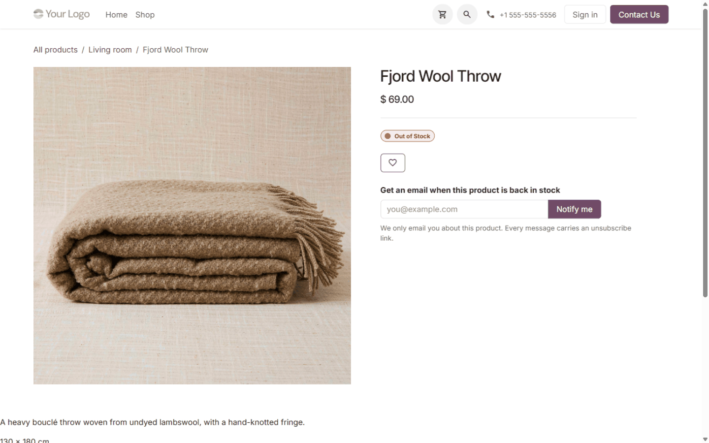
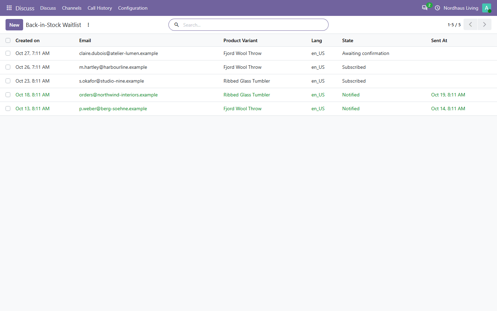

Back in Stock Notifications
Turn a sold-out product page into a waitlist, and email each subscriber
once, when the variant they asked about is available again.
What it looks like

An out-of-stock variant offers the waitlist form instead of a dead add-to-cart button.

Every subscriber is listed with the variant, the state and when the mail went out.
On the product page
When a stock-managed variant cannot be sold because the shelf is empty,
the product page offers a single email field instead of leaving the
buyer with a dead end. The form is a plain HTML post: it works with
JavaScript disabled, it needs no extra route for the browser to call,
and the visitor lands back on the product page with a short
confirmation.
- The form only appears while the variant is out of stock and the shop is not selling it anyway.
- One row per variant: a subscriber who asked about the large size is not told about the small one.
- Submitting twice with the same address keeps one entry and sends one confirmation, not two.
Double opt-in
With the confirmation step on (the default), nothing is sent when the
product returns until the visitor has opened the link in the
confirmation email. A mistyped address, a shared inbox or a form filled
in by a bot therefore cannot be made to receive a restock notice. Turn
the step off if you would rather subscribe from the single form submit.
One email per subscription
The scheduled sweep claims each subscription with a conditional update
before it builds a message, and only the run whose update matched the
row may send. A second run — a cron overlap, a manual send, two
workers — finds the row already claimed and sends nothing. If building
the message fails, the claim is rolled back with it, so the subscriber
stays on the list for the next run instead of being silently dropped.
Language and links
- The language is stored on the subscription, so the restock email is written in the language the visitor was browsing in, whatever the back office uses.
- Both links carry an opaque token, not the record id.
- The unsubscribe link opens a page with a button. Following the link does not cancel anything on its own, so a mail scanner or a link preview cannot drop a customer from the list.
In the back office
- Sales > Configuration > Back-in-Stock Waitlist lists every entry with its product, language and status.
- Filters for waiting, subscribed, notified and cancelled, and grouping by product or status.
- Website > Settings holds the three switches: the waitlist itself, the confirmation step, and the template used for the restock email.
- Internal users can read the waitlist; only administrators can change or delete entries.
What it does not do
- It does not reserve stock, quote a date or take a pre-order. It tells a visitor that the product is back.
- It does not notify about a product that is not stock-managed: a service or a consumable never has an on-hand figure to come back from.
- While the waitlist is enabled it hides the shop's own “notify me” widget, which would otherwise ask for the same address a second time. Turning the waitlist off brings the built-in widget back.
- Restock emails go out on the scheduled sweep, every fifteen minutes, rather than from the receipt validation: a delivery that is still being corrected cannot mail a customer about stock that never arrived.